Architecture Portfolio — 2024–2026
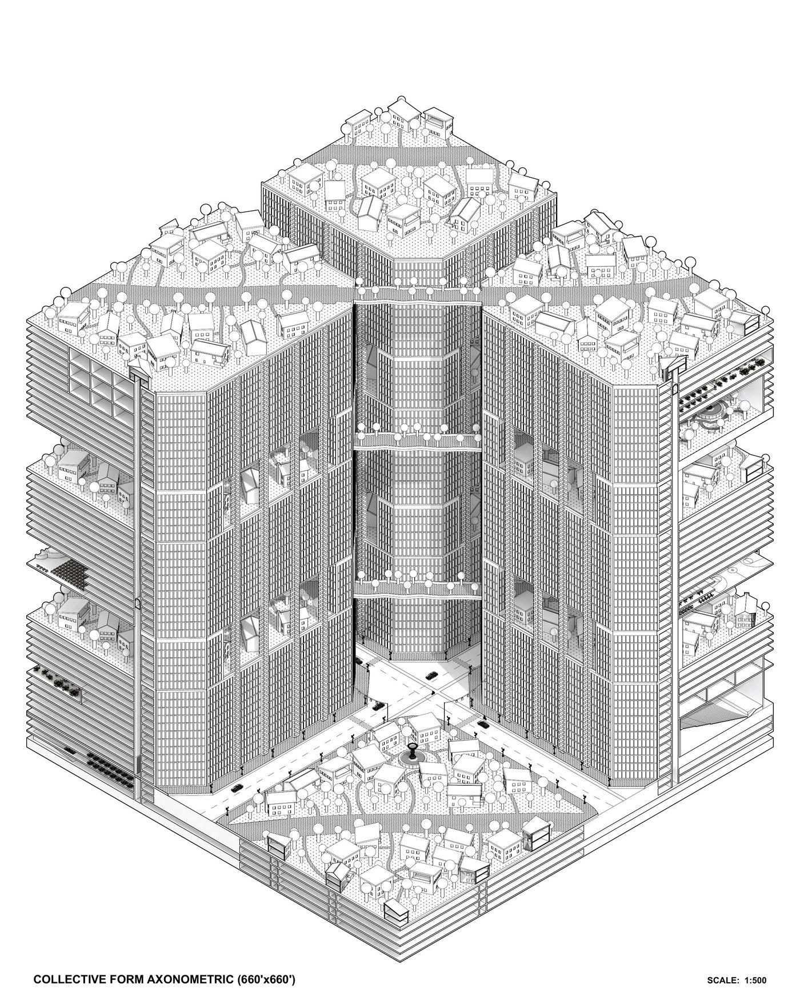
Réticula collides small residential houses with monumental chamfered superblocks. Larger blocks form a dense grid of civic, educational, governmental, and commercial spaces, while sparse residential neighborhoods are layered into the ground and gaps between them. Residential pathways cross above, below, and through the grid — combining neighborhood openness with urban density.
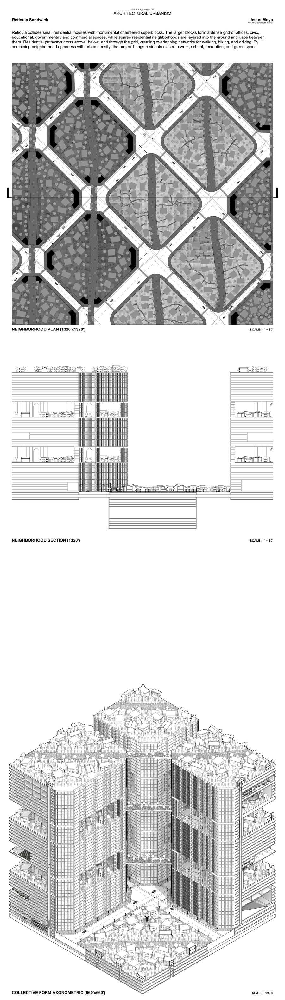
A systematic urban analysis of a half-mile × half-mile tile of Barcelona's Eixample district. Four drawings — aerial, figure-ground, program, and network — dissect the grid's spatial organization, movement infrastructure, and programmatic density.
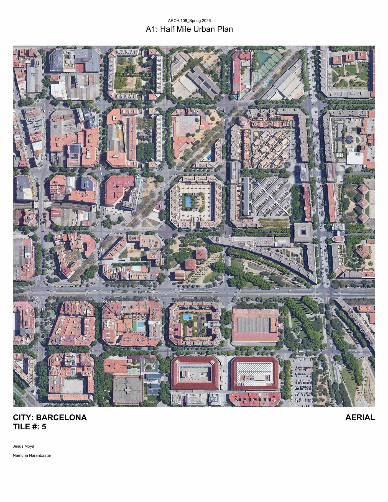
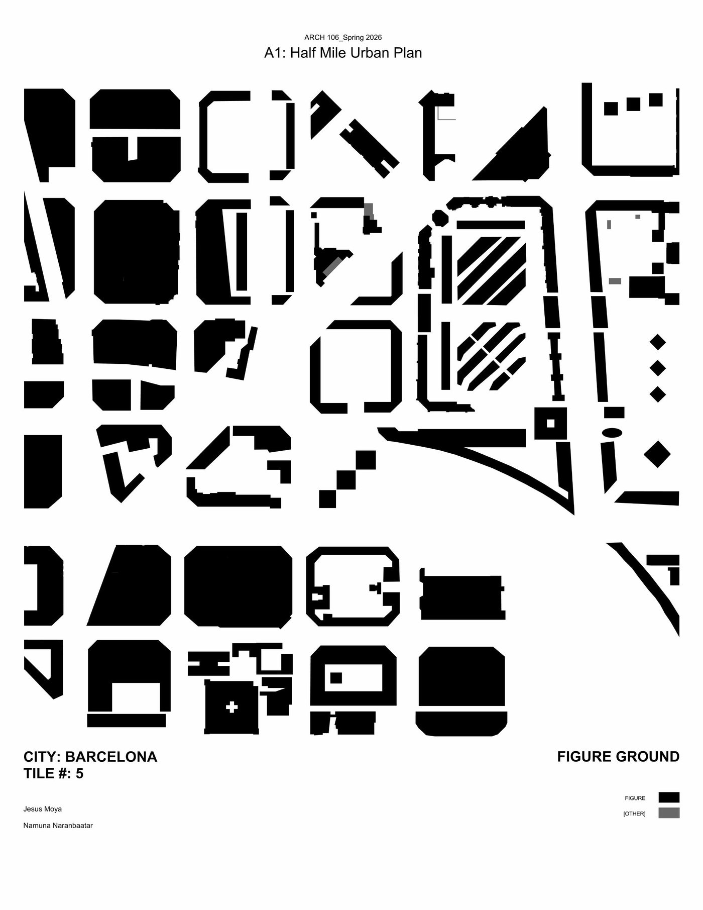
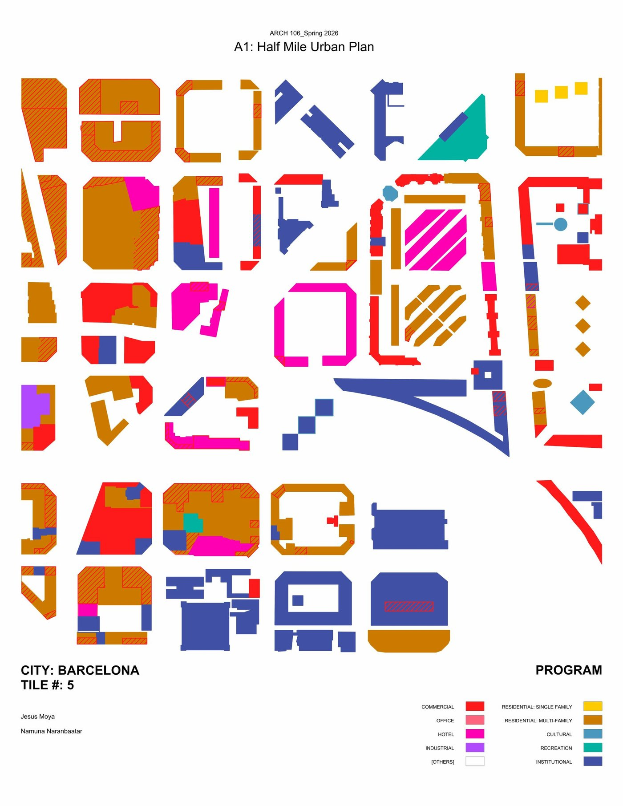
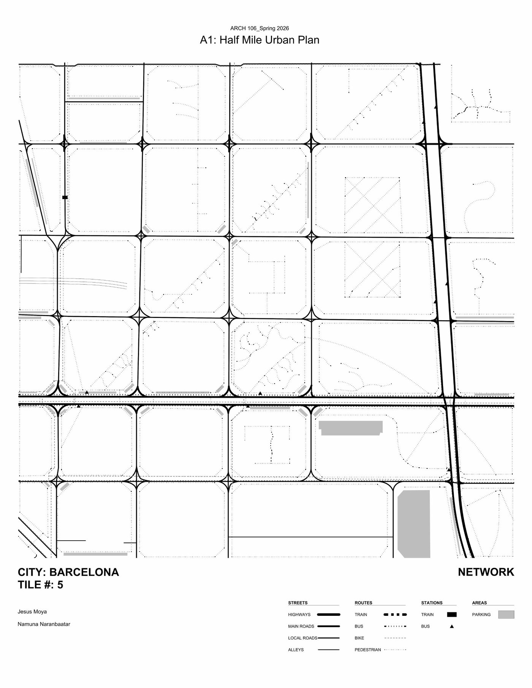
Beginning with a Dualit Classic toaster, the study explores how a familiar domestic object can be morphed through repetition, extension, and formal logic. The original two-slot form is stretched into a dramatically elongated multi-slot object that retains the toaster's essential identity while transforming its scale and spatial presence.
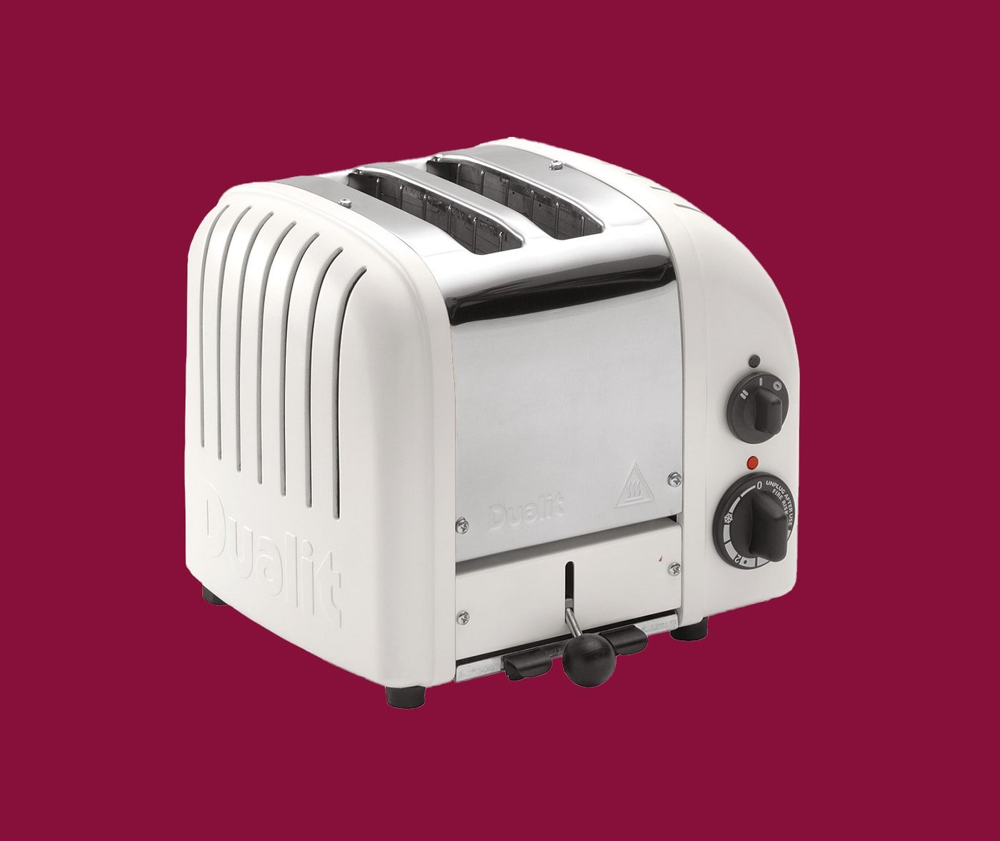
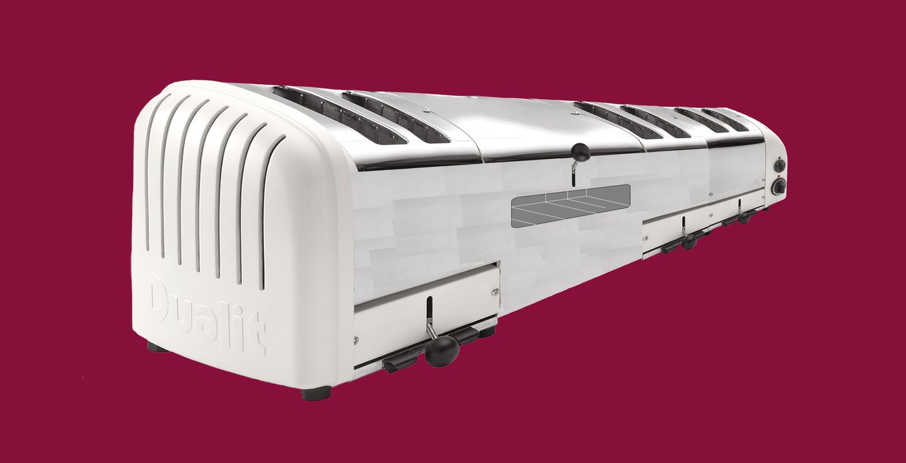
Hand drawings exploring two-point perspective, form, texture, and structural massing. Each work is built through direct observation and constructed line — drawing as both method and artifact.
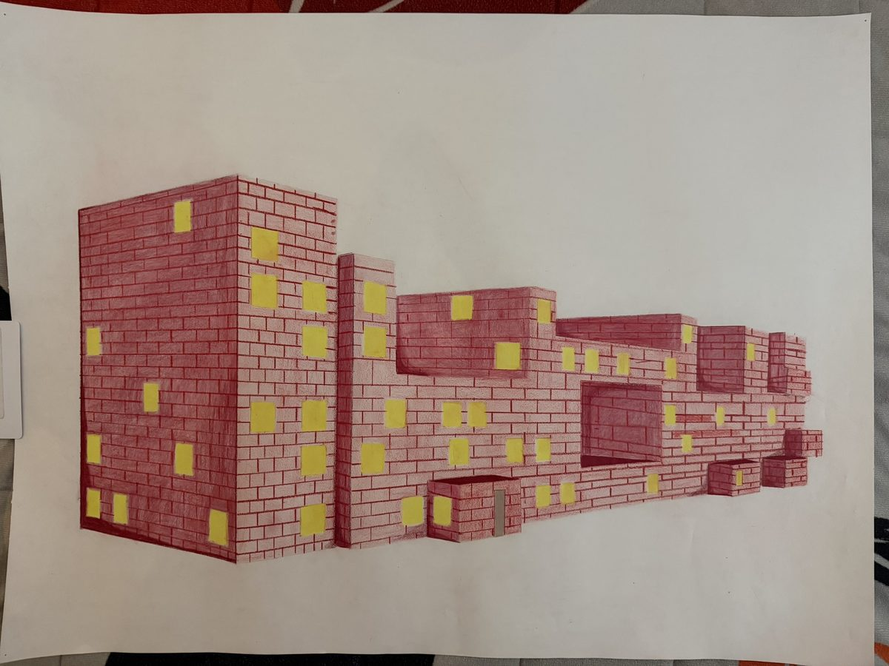
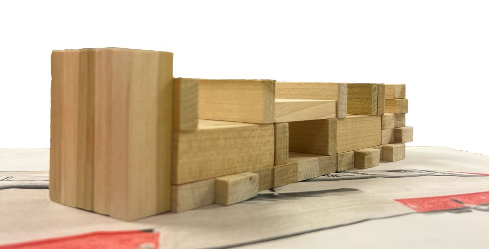
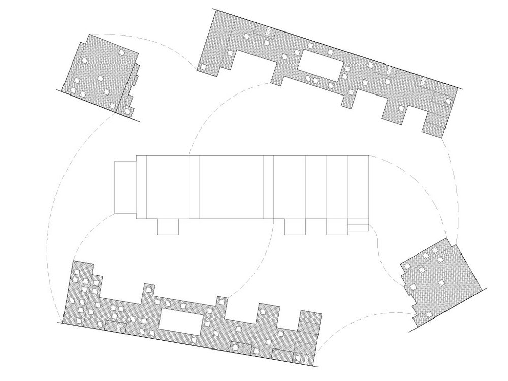
I am a first-year architecture student at the University of Illinois at Chicago, approaching design through the discipline of the hand-drawn line and spatial analysis. Drawing, for me, is not documentation — it is thinking made visible.
My Spring 2025 final project, Réticula Sandwich, was selected from a cohort of twenty students to present before an external super jury — architecture professors from institutions across the country.
My work spans urban analysis, object transformation, perspectival drawing, physical model-making, and digital visualization. I am interested in collective form, urban density, and the friction between neighborhood scale and monumental infrastructure.